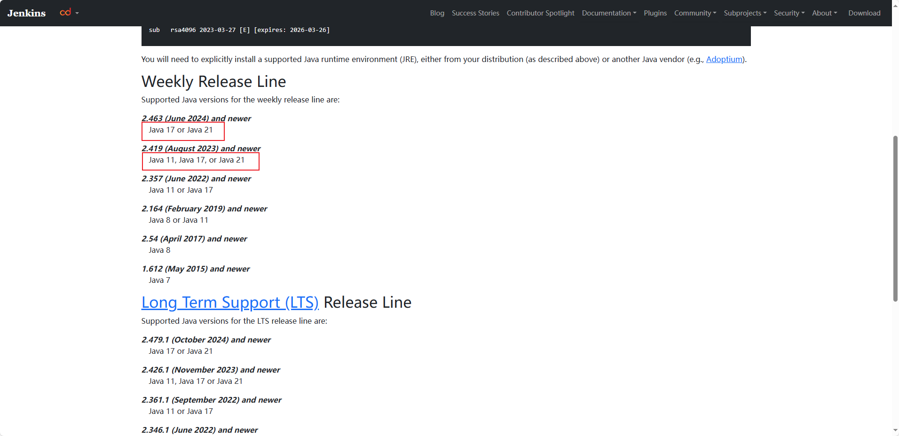
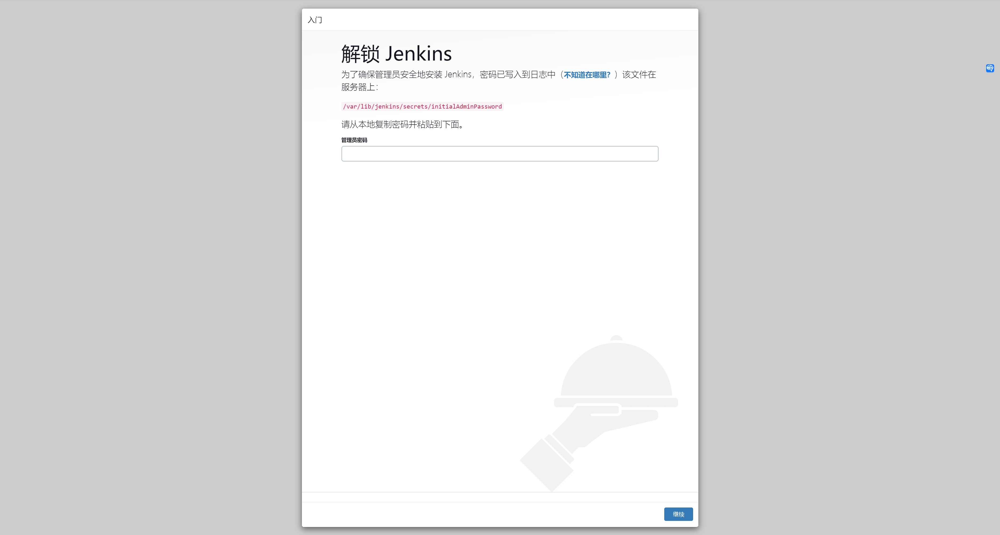
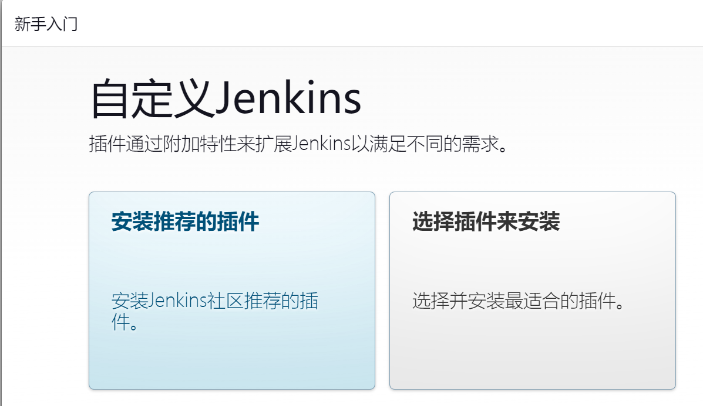
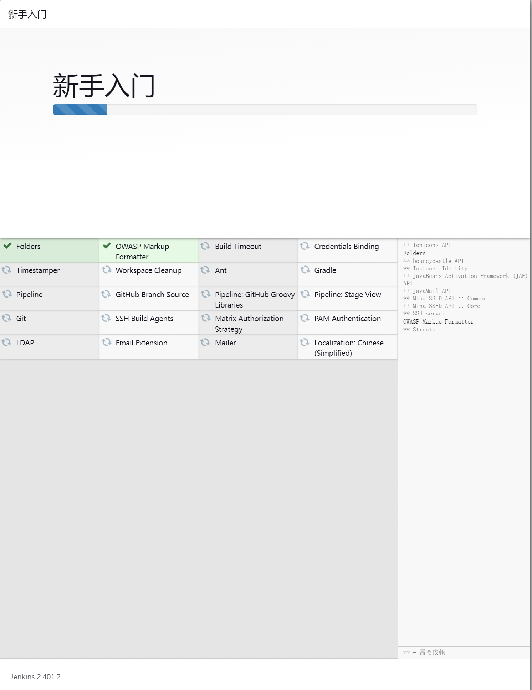
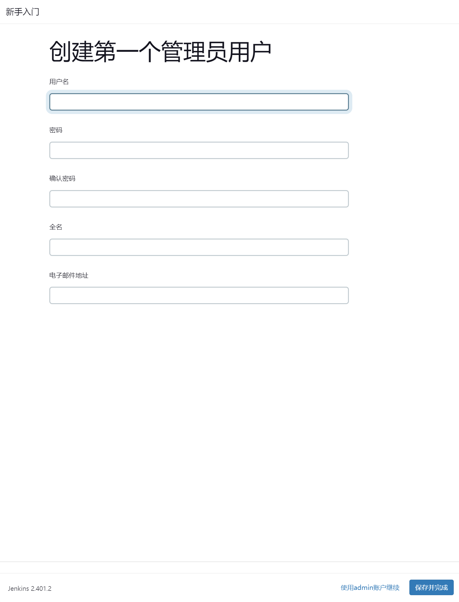

Jenkins 安装
Jenkins安装
物理机安装
安装依赖：
CPU、内存、磁
安装Java 8、在2.361.1及以上版本开始要求Java 11，需要提前确认需要安装的版本的依赖JAVA版本 https://pkg.jenkins.io/debian/

root@jenkins:~# apt install openjdk-11-jdk -y
java war包：
二进制安装包：
下载：
https://mirrors.tuna.tsinghua.edu.cn/jenkins/debian-stable/
# 查看安装完后生成的文件有哪些
root@jenkins:~# dpkg -c jenkins_2.401.2_all.deb
drwxr-xr-x root/root 0 2023-06-28 11:23 ./
drwxr-xr-x root/root 0 2023-06-28 11:23 ./etc/
drwxr-xr-x root/root 0 2023-06-28 11:23 ./etc/default/
-rw-r--r-- root/root 2830 2023-06-28 11:23 ./etc/default/jenkins
drwxr-xr-x root/root 0 2023-06-28 11:23 ./etc/init.d/
-rwxr-xr-x root/root 6183 2023-06-28 11:23 ./etc/init.d/jenkins
drwxr-xr-x root/root 0 2023-06-28 11:23 ./etc/logrotate.d/
-rw-r--r-- root/root 191 2023-06-28 11:23 ./etc/logrotate.d/jenkins
drwxr-xr-x root/root 0 2023-06-28 11:23 ./lib/
drwxr-xr-x root/root 0 2023-06-28 11:23 ./lib/systemd/
drwxr-xr-x root/root 0 2023-06-28 11:23 ./lib/systemd/system/
-rw-r--r-- root/root 5447 2023-06-28 11:23 ./lib/systemd/system/jenkins.service
drwxr-xr-x root/root 0 2023-06-28 11:23 ./usr/
drwxr-xr-x root/root 0 2023-06-28 11:23 ./usr/bin/
-rwxr-xr-x root/root 4855 2023-06-28 11:23 ./usr/bin/jenkins
drwxr-xr-x root/root 0 2023-06-28 11:23 ./usr/share/
drwxr-xr-x root/root 0 2023-06-28 11:23 ./usr/share/doc/
drwxr-xr-x root/root 0 2023-06-28 11:23 ./usr/share/doc/jenkins/
-rw-r--r-- root/root 164 2023-06-28 11:23 ./usr/share/doc/jenkins/changelog.gz
-rw-r--r-- root/root 1498 2023-06-28 11:23 ./usr/share/doc/jenkins/copyright
drwxr-xr-x root/root 0 2023-06-28 11:23 ./usr/share/java/
-rw-r--r-- root/root 98406337 2023-06-28 11:23 ./usr/share/java/jenkins.war
drwxr-xr-x root/root 0 2023-06-28 11:23 ./usr/share/jenkins/
-rwxr-xr-x root/root 17761 2023-06-28 11:23 ./usr/share/jenkins/migrate
drwxr-xr-x root/root 0 2023-06-28 11:23 ./var/
drwxr-xr-x root/root 0 2023-06-28 11:23 ./var/cache/
drwxr-xr-x root/root 0 2023-06-28 11:23 ./var/cache/jenkins/
drwxr-xr-x root/root 0 2023-06-28 11:23 ./var/lib/
drwxr-xr-x root/root 0 2023-06-28 11:23 ./var/lib/jenkins/
drwxr-xr-x root/root 0 2023-06-28 11:23 ./var/log/
drwxr-xr-x root/root 0 2023-06-28 11:23 ./var/log/jenkins/
# 安装 jenkins
root@jenkins:~# apt install net-tools
root@jenkins:~# dpkg -i jenkins_2.401.2_all.deb && systemctl stop jenkins
# 需要修改的配置
root@jenkins:~# vim /lib/systemd/system/jenkins.service
# 默认会创建 jenkins 用户，在此设置 root 用户，以免没权限
User=root
Group=root
# 关闭跨站请求伪造保护（CSRF）保护，接受 gitlab 远程触发，注意添加的位置
JAVA_ARGS="-Djava.awt.headless=true -Dhudson.security.csrf.GlobalCrumbIssuerConfiguration.DISABLE_CSRF_PROTECTION=true"
root@jenkins:~# systemctl daemon-reload && systemctl restart jenkins.service
# 验证，检查是否以root启动，且含有 Dhudson 参数
root@jenkins:~# ps -ef | grep jenkins
root 5370 1 27 15:07 ? 00:00:15 /usr/bin/java -Djava.awt.headless=true -Dhudson.security.csrf.GlobalCrumbIssuerConfiguration.DISABLE_CSRF_PROTECTION=true -jar /usr/share/java/jenkin.war --webroot=/var/cache/jenkins/war --httpPort=8080
root 5504 1791 0 15:08 pts/1 00:00:00 grep --color=auto jenkins
Docker 安装
- 下载 Jenkins 镜像
docker pull jenkins/jenkins
- 创建Jenkins挂载目录并授权权限
mkdir -p /var/jenkins_mount
chmod 777 /var/jenkins_mount
- 创建并启动Jenkins容器
docker run -d -p 8080:8080 -p 50000:50000 -v /var/jenkins_mount:/var/jenkins_home -v /etc/localtime:/etc/localtime --name myjenkins jenkins/jenkins
# -v /var/jenkins_mount:/var/jenkins_mount /var/jenkins_home目录为容器jenkins工作目录，我们将硬盘上的一个目录挂载到这个位置，方便后续更新镜像后继续使用原来的工作目录。这里我们设置的就是上面我们创建的 /var/jenkins_mount目录
# -v /etc/localtime:/etc/localtime让容器使用和服务器同样的时间设置。
- 查看jenkins是否启动成功
docker ps
CONTAINER ID IMAGE COMMAND CREATED STATUS PORTS NAMES
b1e0b5a2c571 jenkins/jenkins "/usr/bin/tini -- /u…" 6 days ago Up 5 days 0.0.0.0:50000->50000/tcp, :::50000->50000/tcp, 0.0.0.0:38080->8080/tcp, :::38080->8080/tcp myjenkins
访问 Jenkins
访问 ip:8080

root@jenkins:~# cat /var/lib/jenkins/secrets/initialAdminPassword
c2da068d008642ecb525e28902e4407d
root@jenkins:~#
安装插件

选择：安装推荐的插件（该步骤需要联网）
插件目录：/var/lib/jenkins/plugins/
如果第一遍安装失败，可以重试再安装一次


用户名/密码：jenkinsadmin/12345678
此时插件还未生效，需要重启jenkins
root@jenkins:~# systemctl restart jenkins
Jenkins 插件管理：
-
在线安装插件:
- Blue Ocean #强大的pipliine UI管理界面
- GitLab #支持gitlab远程触发jenkins任务构建
-
卸载插件:
-
离线安装插件:（节点不能上网的时候才会使用）
插件安装完成必须重启才能生效。